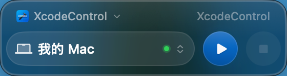
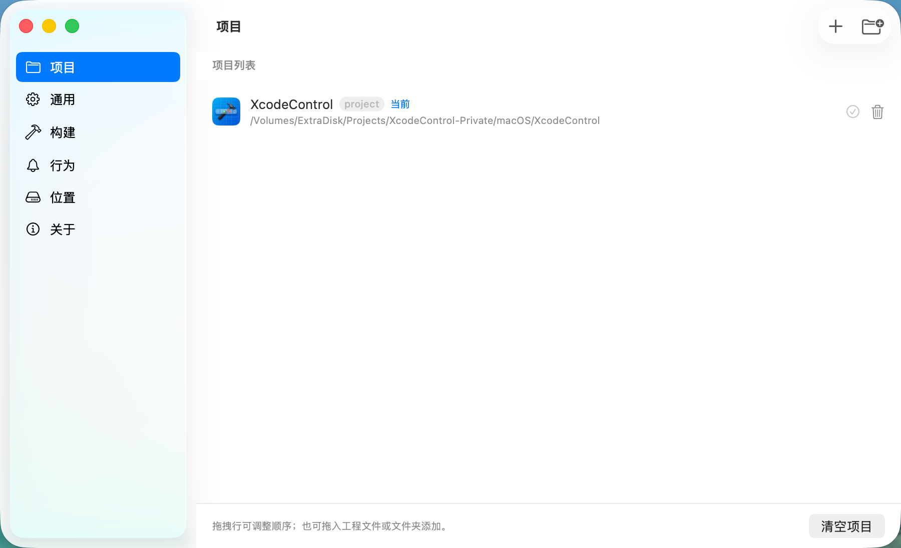

专为 AI 编程与 Vibe Coding 时代打造 —— 不用打开 Xcode，不用切换窗口，一键直达模拟器与真机。

当代码越来越多由 AI 编写，Xcode 几乎只剩下一个功能：Run。但每次运行都要切换窗口、等待响应，思维不断被打断。
在编辑器中改完代码 -> ⌘Tab 切到 Xcode -> 鼠标点击 Run -> ⌘Tab 切回编辑器 -> 遇到编译报错再去排查。
主界面永远只有三个元素：设备、运行、停止。小窗常驻在屏幕角落，按下 ⌥⌘R，编译、安装、启动一步到位。
摒弃一切花哨功能，只为 Xcode 编译运行提供最高效的捷径。
小窗轻巧浮在代码之上，选好项目和设备即可构建、安装、启动与停止，无需唤起 Xcode。
默认 ⌥⌘R，在任何编辑器或应用内按下都能运行，基于系统热键 API，无需辅助功能权限。
运行到 iOS 模拟器、已连接的 iPhone/iPad 真机，或直接运行 Mac App。
拖入 .xcodeproj 或 .xcworkspace 即可秒级添加，随时在多个工程之间无缝切换。
构建失败时提炼可执行的下一步建议，而不是原始报错；随时可一键展开完整构建日志。
没有账号系统、没有分析与遥测，项目与构建输出完全留在你的 Mac 本地磁盘上。
开箱即用，免配置复杂的命令行环境变量。

从 GitHub Releases 下载已通过 Apple 公证的 DMG 安装包，拖入“应用程序”文件夹启动。
打开或拖入 .xcodeproj / .xcworkspace 文件，自动解析 Shared Scheme 和可用设备。
无需切换到 Xcode，在任何编辑器中按下快捷键，应用直接在目标设备上编译并启动！
👇 点击下方按键或在页面上按下 ⌥⌘R 试玩快捷键效果：
以原生 macOS 工具链驱动，保障最高兼容性与执行效率。
| 系统要求 | macOS 14.0 或更高版本 |
| Xcode 环境 | 完整安装 Xcode (并通过 xcode-select 配置) |
| 架构支持 | Universal 2 (Apple Silicon M系列 & Intel x86_64) |
| 分发方式 | Developer ID 签名 + Apple Notarization 公证 DMG |
XcodeControl 核心流程需要直接调用本机的 /usr/bin/xcrun、xcodebuild、simctl 和 devicectl。App Store 强制的沙盒机制会阻止这些系统进程调用，因此采用官方公证的独立分发模式。
每个正式发布的 DMG 均使用 Apple 开发者证书签名并通过 Apple 服务器自动化公证（Stapled），首次启动不会出现“未知开发者”拦截。
没有账户系统、没有广告和遥测。偏好设置与构建输出仅保存在本地标准 macOS 路径。
不需要。XcodeControl 底层直接调用 Apple 官方命令行工具链（xcodebuild / simctl / devicectl），即使彻底退出 Xcode 界面，也能正常编译、安装和启动应用。
Command Line Tools 仅包含基础编译库，缺少 iOS 模拟器运行时、设备调试守护进程（devicectl）以及各平台的完整 SDK，因此必须安装完整 Xcode。
支持。在设置窗口中可以自由更改全局运行快捷键，并可配置是否开机自启与悬浮窗初始位置。
真机需开启“开发者模式”并在 Xcode 中完成过至少一次信任证书配置，之后 XcodeControl 即可通过 devicectl 无缝部署运行。